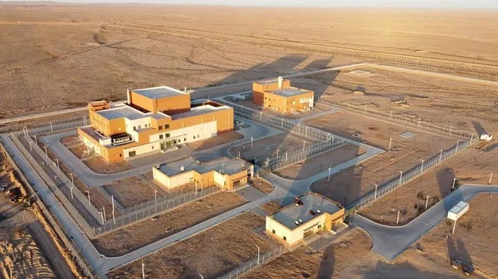
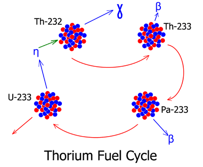
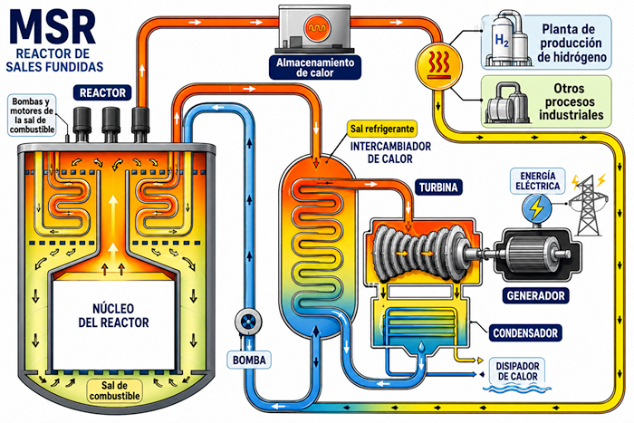
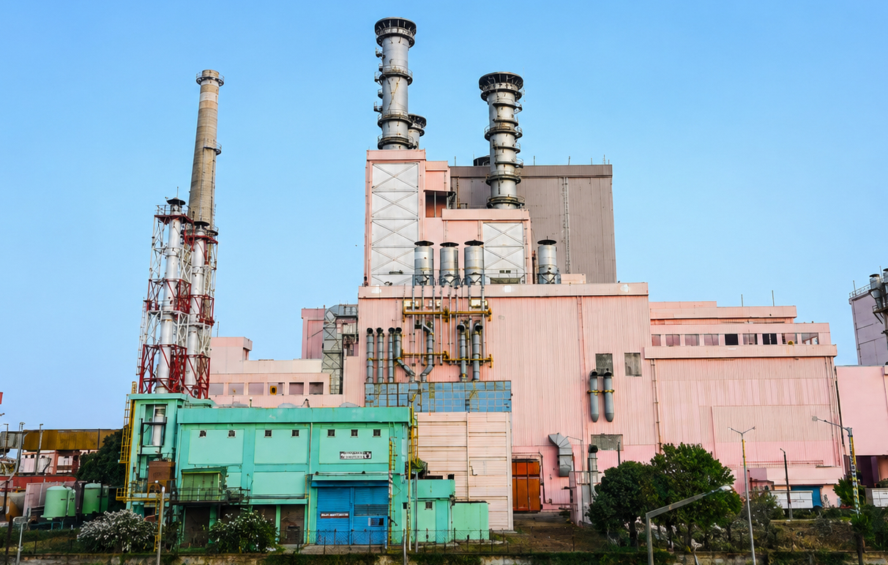
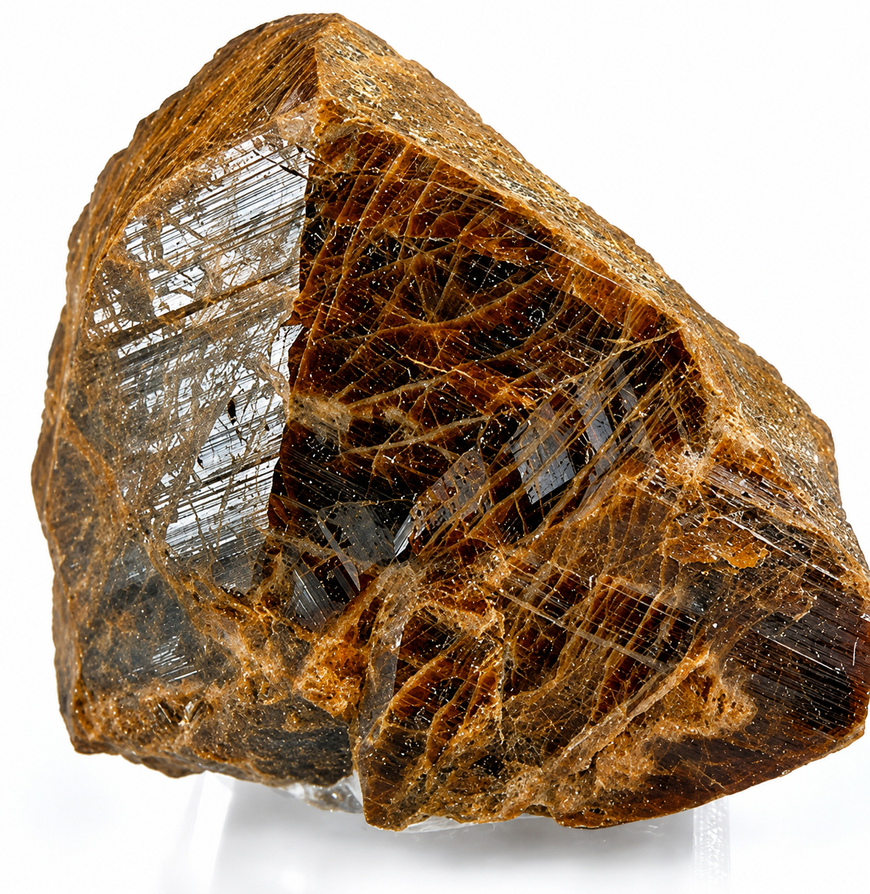
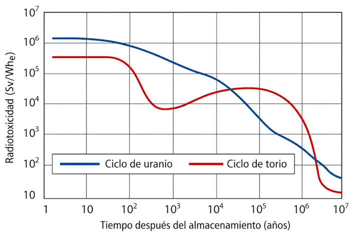
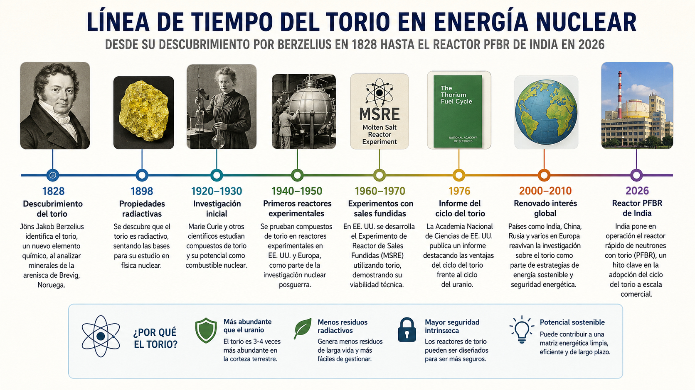
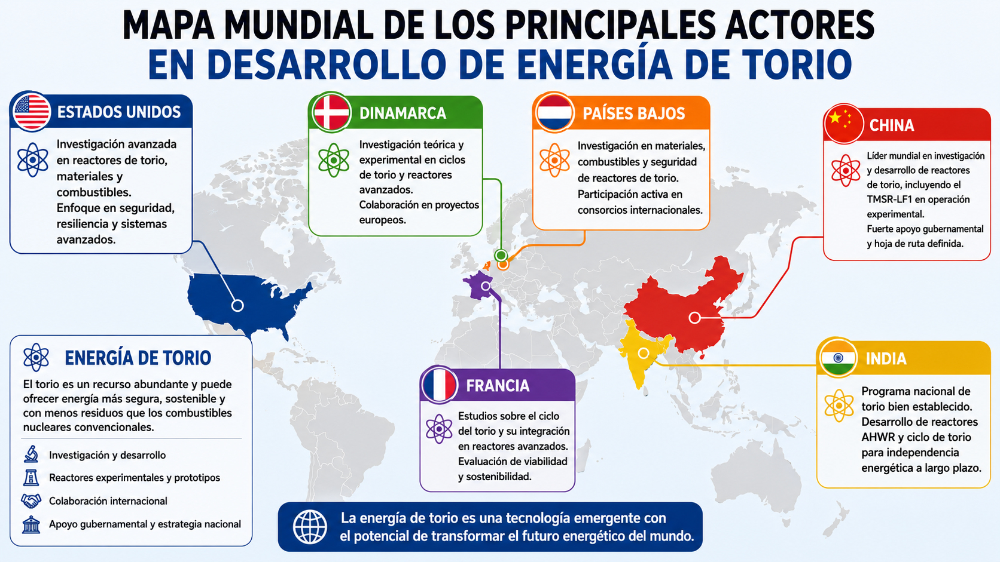
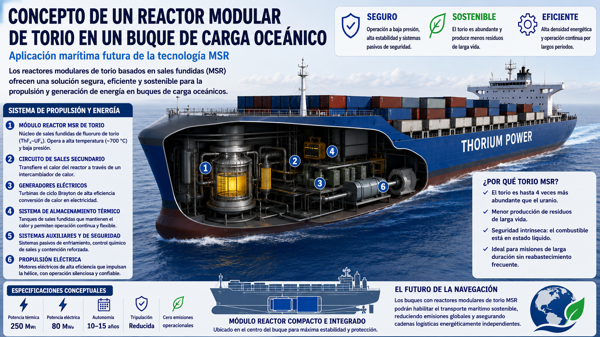

El complejo TMSR-LF1 en Wuwei, Gansu, China, primer reactor de torio y sales fundidas construido en medio siglo.
Fuente: China National Nuclear Corporation / SINAP
Mientras Occidente debate si el nuclear tiene futuro, dos potencias asiáticas están construyendo la próxima generación de reactores con un metal que la Tierra tiene en abundancia: el torio. Tres a cuatro veces más común que el uranio, más seguro y con residuos de menor vida media. ¿Por qué entonces no lo usamos ya?
Más abundante que
el uranio en la corteza
~10.5 ppm vs ~3 ppm (IAEA)
Vida media de Th-232
estable geológicamente
No requiere refrigeración pasiva
Años de energía potencial
en reservas chinas
Solo en Bayan Obo (Inner Mongolia)

El complejo TMSR-LF1 en Wuwei, Gansu, China, primer reactor de torio y sales fundidas construido en medio siglo.
Fuente: China National Nuclear Corporation / SINAP
En el desierto de Wuwei, al noroeste de China, un reactor de 2 MW está a punto de completar su construcción. No es cualquier reactor: es el primero del mundo diseñado para funcionar con torio disuelto en sales fundidas de fluoruro de litio-berilio. A 700 °C y presión atmosférica, el torio-232 absorbe neutrones y se convierte, vía dos desintegraciones beta, en uranio-233 fisible. El proceso, descubierto teóricamente en los años 40 y demostrado en Oak Ridge en los 60, nunca había escalado más allá del laboratorio. Hasta ahora.
Este artículo se basa en el informe técnico "El Torio en la Energía Nuclear", compilado a partir de datos de la OIEA, el Foro Nuclear, la World Nuclear Association y publicaciones científicas revisadas por pares. Las cifras de reservas provienen del "Libro Rojo" de la OCDE/IAEA (Uranium 2016). Los avances de 2026 se han verificado contra fuentes de IEEE Spectrum, South China Morning Post y Defence24.

El ciclo de combustible del torio: de fértil a fisible en dos desintegraciones beta.
Fuente: OIEA / Foro Nuclear
El torio (Th, Z=90) es un metal blando plateado del grupo de los actínidos, aislado por J.J. Berzelius en 1828 a partir de un mineral escandinavo. En la naturaleza existe prácticamente solo como Th-232, con una vida media de aproximadamente 14,000 millones de años. No es fisible por sí mismo: debe capturar un neutrón para formar, vía protactinio-233, uranio-233, que sí puede fisionar liberando energía.
El esquema simplificado del ciclo de combustible es elegante: Th-232 captura un neutrón, se convierte en Th-233 (radiactivo), que decae por beta a Pa-233 (vida media ~27 días), y este a su vez decae a U-233 (fisible). El U-233 generado contiene inevitablemente trazas de U-232, cuya cadena de desintegración produce emisores gamma intensos (especialmente Tl-208). Esto complica la manipulación —requiere blindaje y manipuladores remotos— pero añade una barrera no trivial a su uso armamentístico.
// Dato técnico
Economía de neutrones del U-233
El U-233 produce más neutrones por fisión (~2.5 en promedio) que el U-235 o el Pu-239. Esto mejora la multiplicación y permite la "reproducción térmica": un reactor de torio puede, en teoría, generar más combustible fisionable del que consume, siempre que la geometría y el espectro de neutrones sean los adecuados.
Además, los combustibles basados en torio generan menos actínidos de vida muy larga que los convencionales. Estudios indican que el torio en mezcla con plutonio produce notablemente menos transuránicos que un MOX de U-Pu comparable.

Esquema de un reactor de sales fundidas (MSR): el combustible líquido circula por el núcleo y transporta calor directamente al intercambiador.
Fuente: Generation IV International Forum
China, a través del CNNC (China National Nuclear Corporation) y el Instituto de Física Aplicada de Shanghai (SINAP), lidera el desarrollo de reactores de sales fundidas (MSR) de torio. En 2023 obtuvo permiso para su prototipo experimental TMSR-LF1 de 2 MW, que alcanzó criticidad en octubre de ese año y potencia plena en junio de 2024. En 2026, la construcción del reactor está a punto de finalizar en Wuwei, con pruebas previstas para septiembre.
El plan chino es ambicioso: un reactor modular de 10 MW para 2030, seguido de un prototipo de 100 MW cinco años después. Pero lo más llamativo es la aplicación marítima: China quiere instalar un TMSR de 50 MW en el buque de carga más grande del mundo, capaz de transportar 14,000 contenedores con cero emisiones de CO₂ y años sin repostar.
"Estamos ahora en la frontera de la innovación nuclear global."
— Ingeniero jefe del proyecto TMSR-LF1 · SINAP · 2024India, por su parte, acaba de lograr un hito histórico. En abril de 2026, científicos del BARC (Bhabha Atomic Research Centre) anunciaron que el reactor prototipo de criador rápido (PFBR) de 500 MW en Kalpakkam, Tamil Nadu, había alcanzado la criticidad. El primer ministro Narendra Modi lo calificó como un momento definitorio para el programa energético del país. India posee el ~25% de las reservas mundiales de torio (~846,000 toneladas), pero uranio escaso. Su programa nuclear de tres etapas —uranio natural en reactores de agua pesada, criadores rápidos que "queman" torio, y finalmente reactores avanzados de agua pesada (AHWR) alimentados exclusivamente con U-233 reciclado— está ahora en la segunda fase.

El reactor PFBR de 500 MW en Kalpakkam, Tamil Nadu, India. Alcanzó criticidad en abril de 2026, abriendo la segunda fase del programa nuclear indio.
Fuente: Bhabha Atomic Research Centre / Daily Pioneer
// El dilema indio
¿Por qué India no ha liderado la carrera del torio?
A pesar de tener las mayores reservas del mundo, India carece de uranio doméstico suficiente para alimentar la primera etapa de su programa. El PFBR de Kalpakkam, anunciado desde 2003, ha sufrido retrasos de más de una década. Mientras tanto, China, que obtiene torio como subproducto de su industria de tierras raras, ha acelerado su programa MSR con financiación estatal masiva.
La firma estadounidense Clean Core Thorium Energy recibió licencia en 2025 para exportar combustible de torio a India, mezclado con uranio enriquecido para usar en reactores de agua pesada existentes. Si funciona, esta ruta evitaría construir reactores MSR desde cero.
La pregunta que el informe técnico responde con franqueza es: si el torio es tan prometedor, ¿por qué no hay reactores comerciales de torio en 2026? La respuesta es una conjunción de factores técnicos, económicos, regulatorios e históricos que, vistos en conjunto, explican el estancamiento de medio siglo.
Los reactores de sales fundidas operan a alta temperatura (700 °C) con sales fluoradas altamente corrosivas. Los materiales del reactor deben resistir tanto la temperatura como la química agresiva durante décadas. El reprocesamiento del torio irradiado es complejo: disolver ThO₂, manejar gases radioactivos y procesar sales de fluor plantea serios retos que aún no tienen solución a escala industrial. Además, la fabricación de combustible ThO₂ requiere manipuladores remotos debido a la radiación gamma del U-232.
No existe demanda ni industria establecida para el torio. La monacita —principal mineral portador— se extrae hoy por sus tierras raras, no por torio. Sin una cadena de suministro dedicada, los costos de I+D son prohibitivos. El torio podría costar ~$50/kg (~$2.22/GWh), frente a ~$4,500/kg del uranio (~$3,125/GWh), pero esos números son teóricos hasta que no exista una industria madura.

Monacita, el principal mineral portador de torio. Se extrae como subproducto de la industria de tierras raras.
Fuente: Geology.com
Los marcos regulatorios mundiales están diseñados para uranio y reactores de agua a presión. Adaptar normativas para MSR, combustibles de torio y nuevos ciclos de reprocesamiento lleva años y no es prioritario. Históricamente, durante la Guerra Fría, EE.UU. y la URSS priorizaron reactores rápidos y plutonio —más útiles para armas y submarinos nucleares— dejando el torio en segundo plano. El experimento MSRE de Oak Ridge (1965–1969) fue exitoso, pero su financiación se redirigió.

Radiotoxicidad residual del ciclo de torio (rojo) frente al ciclo de uranio (azul). El torio alcanza niveles seguros en ~300 años; el uranio, en ~100,000 años.
Fuente: The Ecologist / Estudios de ciclo de combustible nuclear
| Parámetro | Torio (Th-232) | Uranio (U-235) |
|---|---|---|
| Abundancia en corteza | ~10.5 ppm (3–4× más) | ~3 ppm |
| Estado natural | Fértil (necesita neutrones) | Fisible (directo) |
| Vida media del residuo | ~300 años (hasta niveles seguros) | ~10,000–100,000 años |
| Presión de operación | Atmosférica (MSR) | 75–150 bar (PWR/BWR) |
| Riesgo de fusión | Muy bajo (drenaje pasivo) | Requiere sistemas activos |
| Riesgo de proliferación | U-233 es altamente weaponizable | Requiere enriquecimiento |
| Estado comercial | Solo prototipos (China, India) | Maduro y desplegado globalmente |

Cronología del torio en energía nuclear: de la curiosidad química del siglo XIX a la carrera tecnológica del siglo XXI.
Fuente: Mundo Maravilloso / OIEA / World Nuclear Association
1828
Descubrimiento del torio
J.J. Berzelius aísla el elemento a partir de un mineral escandinavo. No se sospecha su potencial energético.
1898
Radiactividad confirmada
Marie Curie y Gerhard Schmidt demuestran que el torio es radiactivo, abriendo el campo de la radiactividad natural.
1940s
Ciclo de combustible teorizado
Se describe teóricamente la conversión Th-232 → U-233. Durante la Guerra Fría, el interés se centra en el plutonio para armas.
1965–1969
MSRE en Oak Ridge
El reactor experimental de sales fundidas de EE.UU. demuestra la viabilidad técnica del ciclo. Se cierra por redirección de fondos hacia reactores de agua a presión.
1977–1989
Demostradores con torio
Shippingport (EE.UU.) opera con U-233. THTR-300 (Alemania) y Peach Bottom/Fort St. Vrain (EE.UU.) usan lechos de esferas de grafito con torio-uranio. Todos se cierran por costos y problemas técnicos.
2011
China revive el MSR
El gobierno chino aprueba planes para un reactor de torio de sales fundidas, basándose en la investigación pública de Oak Ridge. SINAP lidera el proyecto.
2021
TMSR-LF1 completado
China finaliza la construcción del prototipo de 2 MW en Wuwei. Es el primer reactor de torio construido en medio siglo.
2023
Criticidad y potencia plena
El TMSR-LF1 alcanza criticidad en octubre y potencia operativa en junio de 2024. Se logra la primera recarga en operación y conversión torio-uranio.
2024–2025
Escalada y competencia global
China anuncia el reactor de 10 MW para 2030. Copenhagen Atomics (Dinamarca) planea reactores modulares. Clean Core (EE.UU.) obtiene licencia para exportar a India. Thorizon (Francia/Países Bajos) recauda €40M.
2026
India alcanza criticidad en PFBR
El reactor de criador rápido de Kalpakkam (500 MW) alcanza criticidad. India se convierte en el segundo país con un criador rápido comercial, tras Rusia. El camino hacia el torio está ahora abierto.
La viabilidad futura del torio es incierta, pero menos que hace una década. En un escenario optimista, si se resuelven los retos técnicos clave —materiales anticorrosivos, reprocesamiento maduro, combustible inicial asequible— y se destina inversión sostenida, podrían entrar en servicio prototipos operacionales antes de 2030 (como el proyecto chino de 10 MW) y reactores de demostración en 2035–2040.
En un escenario realista, la tecnología madura en la segunda mitad de siglo. Se necesitarían varios demostradores en condiciones reales para validar seguridad y economía, y cambios regulatorios profundos para aplicación comercial hacia 2045–2050. En un escenario pesimista, las dificultades económicas o el empuje continuado del uranio y las energías renovables podrían postergar indefinidamente su despliegue a gran escala.

Mapa global de los actores en desarrollo de energía de torio. China e India lideran; Europa y EE.UU. siguen de cerca.
Fuente: Mundo Maravilloso / OIEA
// Actores globales
Quién está en la carrera del torio
China (líder): CNNC/SINAP. TMSR-LF1 operativo (2 MW). Plan de 10 MW para 2030, 100 MW para ~2035. Aplicación marítima: 50 MW para buque de carga.
India (reservas + programa): BARC. PFBR de 500 MW en Kalpakkam alcanza criticidad (2026). Programa de 3 etapas: uranio → plutonio → torio. AHWR de 300 MW en diseño.
Dinamarca: Copenhagen Atomics. Reactores modulares en contenedor. Objetivo: 1 unidad/día. Piloto 2026, comercial 2030.
EE.UU.: Clean Core Thorium Energy (combustible Th+U para PHWR). Natura Resources + Abilene Christian University (1 MW MSR, licencia NRC 2024). Kairos Power (sal de fluoruro, acuerdo con Google).
Francia/Países Bajos: Thorizon. Combustible Th + residuos reciclados. €40M recaudados. Thorizon One: construcción 2030.
// Preguntas abiertas

Concepto de aplicación marítima: un reactor MSR de torio de 50 MW podría alimentar el buque de carga más grande del mundo durante años sin repostar.
Ilustración: Mundo Maravilloso / Concepto artístico
// Comentarios